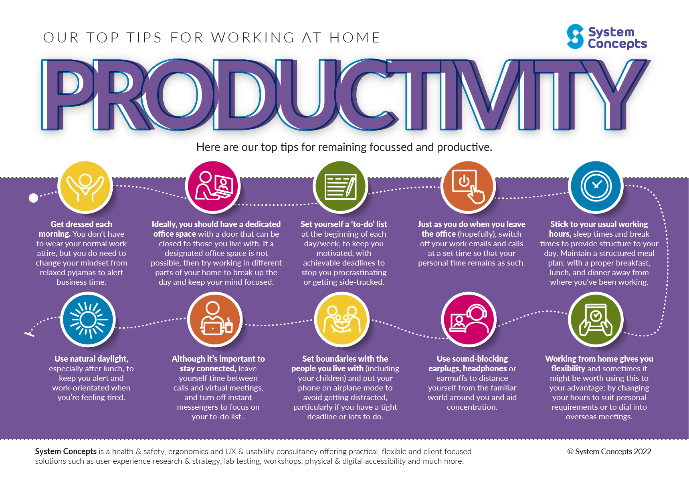

Productivity

Productivity is output measured by input. However, quantifying productivity isn’t always straightforward if the results aren’t immediately tangible. Some projects and industries require a lot of self-motivation. For example, in service provider industries, when trying to get a promotion or attempting a creative project such as writing a book. For these types of work, productivity can’t always be measured in terms of immediate results or output.When considering how to be more productive, many turn to time management techniques. Although interconnected, productivity and time management are two different things and not all productive people are particularly good at time management.
Time management is a range of skills and tools that promote the effective use of a person’s time. Productivity is about the results that are achieved within a certain length of time. Sometimes the most productive results don’t come from effectively managing a list of tasks – productivity is more concerned with the outcome.
10 tips for improving productivity

Try incorporating some of these productivity tips into your daily schedule. Monitor what does and doesn’t work for you so you can build a lasting plan to improve your productivity.
1. Stop multitasking
It’s often tempting to try and multitask, juggling numerous workday tasks at any one time. While this may feel productive, it rarely produces the best results. By focusing on just one task at a time, you will complete it to a higher standard and in less time, enabling you to move seamlessly on to the next task.
2. Set small goals
Large tasks or projects can feel intimidating and we often overestimate how long they will take to complete. You can create forward momentum by breaking tasks down into manageable, bite-sized milestones, which build until your project is complete. For example, clearing your inbox by answering four emails at a time throughout the day.
3. Take a break
It may seem strange to suggest taking breaks when talking about being productive at work, but regular breaks actually help decrease stress and increase productivity. Monash University’s course, Mindfulness for Wellbeing and Peak Performance, discusses how to improve performance by reducing stress in the workplace.
Many workplaces ensure employees take regular breaks. However, if you work from home or in an office that doesn’t monitor your activity, consider scheduling frequent short breaks of 10/15 minutes. Use this time to step away from your work, enabling your mind to have a rest and return with renewed motivation and potentially new ideas.
4. The five-minute rule
If procrastination is a big challenge for you, try the five-minute rule. By promising yourself that you will spend just five minutes on an outstanding task, you eliminate many of the excuses that stop you from starting. Almost anyone can dedicate just five minutes to writing an email, researching a topic, completing some filing or outlining a new task.
Often, once the five minutes are finished, the motivation to continue remains. Even if you move on to another productive task, the small jobs completed within the five minutes still represent an important contribution to your overall output. As ever, it is these small tasks that we put off the most.
5. Time blocking
Using time blocks is an established and well-known productivity strategy. By creating time block frames in your workday schedule, you make the conscious decision to dedicate a ‘block’ of time to a certain task.
Time blocks are usually divided into 60 or 90-minute sections. You may like to print the schedule out or colour code your tasks, as one of the benefits of time blocking is that once completed, it creates a visual guide for your workday.
Manchester Metropolitan University
Mental Skills Training for Sport and Health
University of Leeds
Skills to Succeed in the Digital Workplace
6. Delegate
If you work as part of a team, look at your daily tasks and consider if any can be delegated to other team members. Often, we take on work that is outside our remit or can be done far quicker by others.
Delegation isn’t about offloading work you don’t want to do. Instead, it’s about ensuring everyone is working on the tasks best suited to their skills and availability. If you’re interested in learning more about managing and delegating within a team, the Open University’s course Business Fundamentals: Project Management explores this topic further.
Entrepreneurs tend to try and juggle all of their business tasks. Delegating to new employees or using freelancers for things like social media content can mean more time is available for higher priority tasks.
7. Limit distractions
Becoming distracted is very normal, and focus doesn’t always come naturally. However, it is a skill that can be developed. Turn your notifications off, switch your phone to aeroplane mode, or use a productivity app like Freedom.
The Pomodoro technique is commonly used to prevent distractions and complete tasks. Users set a timer, removing all distractions from their vicinity (social media, emails, etc.) and work in timed sprints of 20-30 minutes. Knowing that you only have to focus for a short period is an excellent way of ability to focus for more extended periods.
8. Do the hardest thing first
It can be tempting to avoid difficult or time-consuming tasks and instead focus on quick wins. However, by taking on your most difficult projects first, you can increase your motivation and focus for the rest of the day. Consider prioritising these bigger tasks first in the day, or when you feel most productive.
9. Set boundaries
As we discussed in the section on delegation, employees often find themselves taking on work that is beyond the scope of their role. While it is considered a good thing to be flexible and take opportunities for career development, it is also important to set boundaries on your time.
To complete your tasks effectively and be productive, you must be able to complete them within a reasonable timeframe. Setting boundaries stop you from becoming overwhelmed. If you are interested in learning more about resilience at work and maintaining boundaries, look into Deakin University’s course Professional Resilience: Building Skills to Thrive at Work.
10. Identify when you’re most productive
With the advent of covid and remote working, the traditional 9-5 is becoming increasingly less common. Flexible and hybrid working has promoted the concept of working in more productive ways. Everyone is individual. Some employees work best in the morning, while others hit their productive stride after lunch. Identifying when you are most productive and then organising your daily schedule to make the most of these peak times is an excellent way to increase productivity.
You can explore more sections from the navigation bar on the onclick of this button.
Explore more